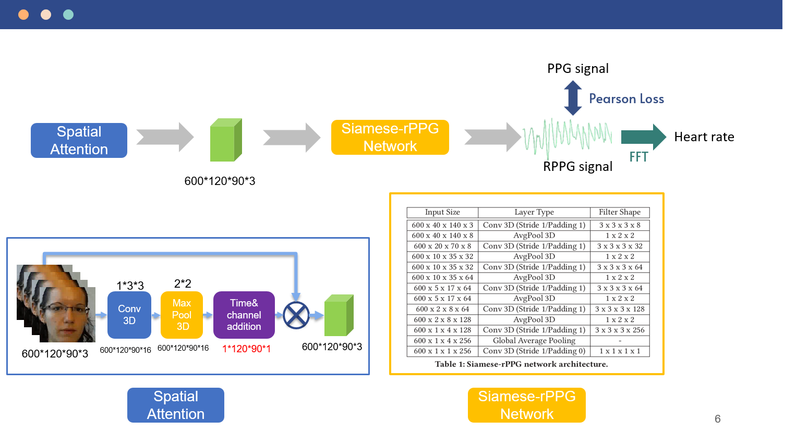

rPPG 遠端即時心率測量系統
Real-time System for Remote Heart Rate Measurement
利用網路攝影機偵測額頭與臉頰，透過模型轉換成RPPG的訊號並輸出心率
Siamese-Network 架構圖

整體生成器架構如圖所示， 此模型主要分為兩個架構： (1) Spatial Attention Spatial Attention主要為取代固定選取ROI的方法， 利用Attention的架構來讓網路自動找到較多rPPG訊號的區域，利於接下來轉換成PPG訊號的訓練 ; (2) Siamese Network Siamese Network 主要由3D Convolution 以及 Average Pooling 所組成， 藉由神經網路提取特定區域顏色變化並轉換成PPG訊號。
Real-time 流程
開啟相機。 先使用OpenCV偵測是否有臉部存在 若有偵測到人臉 取得臉部位置座標並向後連續切256帧後輸入至模型 取得轉換後的rPPG訊號，並透過FFT轉換成心律; 若欲取得下次數據，需重複以上動作。
結論
- 使用Siamese-rppg網路進行實驗並導入Spatial-attention，以提高ROI的準確性
- 在Real-time時，採用Non-Overlapping的形式已獲得最好的表現
- 在訓練時使用使用600幀（20fps，約30秒）進行訓練，避免過長的等待時間導致臉部過度晃動
- 在Real-time時，採用256帧進行實驗，測量速度快且誤差保持在5以內。
Demo
 利用指夾式心率來驗證正確與否
利用指夾式心率來驗證正確與否
我們提出的方法在各項數據上皆有好的表現